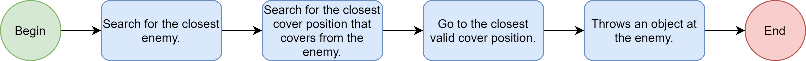

The goal of this project was to practice AI using Unity.
To celebrate the launching of the game The Last of Us 2, I've decided to implement one of the Ellie's behavior when fighting enemies.
Tools: Unity
Overview:
With the launching of the second game from the Last the of Us, I've decided to recreate a scene that was one of the most famous from the early trailers of the first game. The scene shows the AI character Ellie flanking enemies and throwing objects at them in order to create a distraction so the player could reload his gun, find a better cover of even heal himself.
In this project I implemented the behavior when both of the main characters are confronted by enemies.
The AI will behave based on the flow below:

So, once loading the scene the AI will look for the closest enemy to and then search through the cover positions to find which one is best suitable to be closer and also safe from this enemy. Once finding the best spot, the AI will go to this position and then throw an object at the enemy, that will react turning it's attention to the AI character.
Below there are some examples of the AI finding the best cover position to hide from the enemy:
What I learned:
Better understanding of NavMesh and NavMeshAgent;
Using different properties from colliders to identify the points of contact in order to better react when being hit;
Implement a behavior widely applied in adventure / action games.